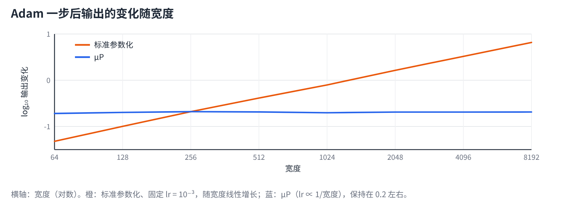
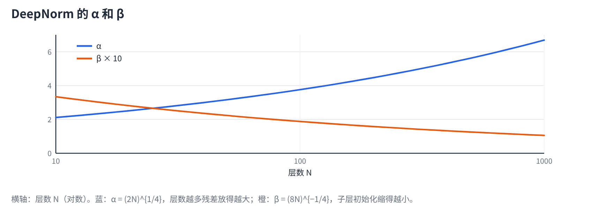
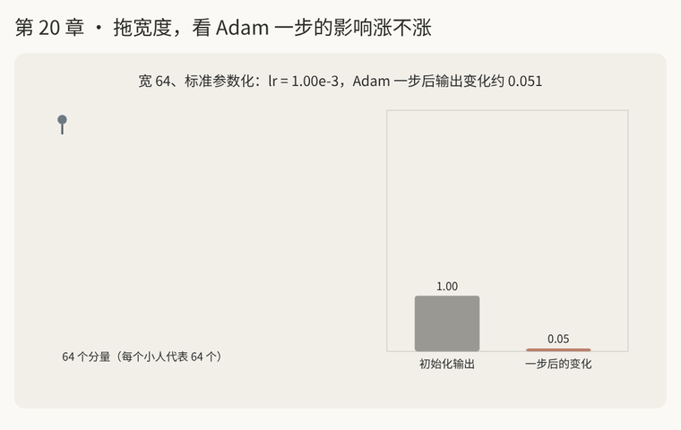

第 20 章 · μP 与 DeepNorm：换宽度为什么要换学习率，很深的 Post-LN 能不能救
本地运行
git clone https://github.com/wikieden/beyond-transformer
cd beyond-transformer/code/notebooks
pip install jupyterlab torch numpy
jupyter lab ch20_mup_deepnorm.ipynb也可以下载后直接用 VS Code 打开 .ipynb 运行。需要 GPU 的章节在 Colab 里选「代码执行程序 → 更改运行时类型 → GPU」。
本章回答：在小模型上调好了学习率，直接搬到宽 16 倍的大模型上，为什么就不是最优了，甚至会发散？初始化已经让前向的输出和宽度无关了，“更新”为什么还和宽度有关？μP 改了什么，能让最优学习率在不同宽度下不动？另一边，DeepNorm 只给残差乘一个 α、给初始化乘一个 β，就让 1000 层的 Post-LN 能训，α、β 是怎么定的？
讲解日期：2026-11-26 · 上一章：第 19 章 巨大激活与 attention sink · 下一章：第 21 章 LLaMA 配方
对应原文：Tensor Programs V（μP）transformer-deep-dive/materials/text/papers/mup-tensor-programs-v-2203.03466.txt摘要 L24（小模型调好的超参“零样本”迁移到大模型）、L65、L153–L155（推广到 Adam，Table 3）、L273–L281（SP 的初始化方差 ∝ 1/fan_in；Table 3：μP 与 SP 对照）；DeepNetdeepnet-2203.00555.txtL306（Post-LN 是 α = 1 的特例）、附录 L1140–L1148（decoder-only / encoder-only：α = (2N)^{1/4}，v = w = β = (8N)^{−1/4}）
本章缩写：μP = Maximal Update Parametrization（最大更新参数化，读作“缪 P”）；SP = Standard Parametrization（标准参数化，各框架的默认做法）；fan_in = 一个权重矩阵的输入维数；HP = hyperparameter（超参数）；μTransfer（在小模型上调超参、直接搬到大模型）；N = 层数；α = 残差的放大系数；β = 子层初始化的缩小系数。全部缩写见 附录 · 缩写与术语表
讲解
第一步：前向和宽度无关，更新却和宽度有关（2026-11-26）
类比：一群人一起推一辆车。 每个人推的力都一样大（Adam 每个权重挪差不多 lr），人越多，车被推得越远。宽度 n 就是“推车的人数”。
标准初始化（SP，L273–L275）：W ~ N(0, 1/fan_in)。这保证了前向的输出量级和宽度无关：y = Wx 的每个分量是 n 项相加，每项方差 1/n，合起来方差约 1。
更新就不一样了。Adam 的第一步（第 3 章）每个权重大约挪 ±lr，而且挪的方向和 x 的符号对齐（梯度 = δxᵀ）。于是
n 项同号相加，随宽度线性增长。
数字演示（一层 y = Wx，x 的分量 O(1)，Adam 一步、lr = 10⁻³）：
| 宽 n | 初始化时输出的均方根 | Adam 一步后输出变化的均方根 |
|---|---|---|
| 256 | 0.998 | 0.209 |
| 1024 | 1.003 | 0.792 |
| 4096 | 0.995 | 3.284 |
前向一直是 1 左右，更新却从 0.2 涨到 3.3（16 倍）。在宽 256 上调好的学习率，搬到宽 4096 上，每一步把输出推得太远，就不稳了；反过来，大模型的最优学习率会往小处漂。
一句话：标准初始化让前向和宽度无关，但 Adam 每个权重都挪 lr、方向又对齐，n 个同号相加，更新的效果随宽度线性增长。
第二步：μP：隐藏层的学习率按 1/宽度缩（2026-11-26）
μP（L65、Table 3 L279–L281）的想法：让每一层“每一步对输出的影响”都和宽度无关，同时保证每一层都在学（不是有的层学得太猛、有的层几乎不动）。对 Adam 来说，最主要的一条是：隐藏层权重的学习率 ∝ 1/fan_in。
数字演示（以宽 256、lr = 10⁻³ 为基准，按 1/n 缩）：
| 宽 n | lr | Adam 一步后输出变化 |
|---|---|---|
| 256 | 1.00 × 10⁻³ | 0.209 |
| 1024 | 2.50 × 10⁻⁴ | 0.198 |
| 4096 | 6.25 × 10⁻⁵ | 0.205 |
更新效果不再随宽度变。μP 还对输入层、输出层（logits 乘 1/width 之类）、注意力的缩放（1/d 而不是 1/√d）做了配套的修改，完整的表在 Table 3。
μTransfer（摘要 L24、L153）：用 μP 参数化后，在小宽度的模型上扫一遍学习率等超参，最优值直接搬到大模型上用，不用再在大模型上调，省下大量算力。

图 20-1 · 横轴是宽度（对数），纵轴是 Adam 一步后输出的变化。橙：标准参数化、固定 lr，随宽度线性增长；蓝：μP（lr ∝ 1/宽度），保持不变一句话：μP 把隐藏层的 Adam 学习率按 1/宽度缩（再配套改输入、输出层和注意力缩放），各宽度下的更新效果一样，最优超参就能从小模型直接搬到大模型。
第三步：DeepNorm：给 Post-LN 的残差乘 α（2026-11-26）
第 12 章说 Post-LN 难训，主流改用 Pre-LN。DeepNet 走另一条路：保留 Post-LN（它训好后效果常常更好），改成
同时把子层里部分权重（FFN、V、输出投影）的初始化再乘 β < 1。普通 Post-LN 就是 α = 1、β = 1 的特例（L306）。
直觉：α > 1 让主干那一路在相加时占更大比重，β < 1 让每个子层一开始只做很小的改动，这样每一步更新对整个模型输出的影响有一个和层数无关的上界，深模型也不会一上来就炸。
decoder-only / encoder-only 的取值（附录 L1140–L1148）：
| 层数 N | α | β |
|---|---|---|
| 12 | 2.213 | 0.319 |
| 100 | 3.761 | 0.188 |
| 1000 | 6.687 | 0.106 |
论文用它训成了 1000 层的 Transformer。现在的大模型大多仍用 Pre-LN（加上第 18 章的那些稳定性手段），DeepNorm 主要在需要很深的编码器、翻译模型里用。

图 20-2 · 横轴是层数 N（对数），蓝：α = (2N)^{1/4}，层数越多残差放得越大；橙：β = (8N)^{−1/4}，子层初始化缩得越小场景代码：用微软的 mup 库把模型改成 μP（真实库调用；本书 chapter-code 只用 NumPy，这段没跑过）：
from mup import MuReadout, set_base_shapes, MuAdamW
model.lm_head = MuReadout(d_model, vocab) # 输出层换成 μP 版本
set_base_shapes(model, base_model, delta=delta_model) # 告诉它哪些维度是“宽度”
opt = MuAdamW(model.parameters(), lr=lr_tuned_on_small) # 按 1/宽度 自动缩隐藏层的学习率
在几个宽度下扫学习率、看最优学习率漂不漂，是里程碑 T-M4 的选做部分；《数学与实验统计》第 42 章有 μP 完整的推导。
一句话：DeepNorm 让 x_{l+1} = LN(αx + f(x))，α = (2N)^{1/4}，子层初始化乘 β = (8N)^{−1/4}，把每一步更新的影响限制住，深的 Post-LN 也能训。
动画演示：拖宽度，看更新效果涨不涨

可交互版：animations/20-mup-deepnorm.html（滑块：log₂ 宽度；下拉：标准参数化 / μP）。
怎么看：
- 左边一排小人是“推车的人”（宽度），每人推的力都一样（第一步）；
- 右边两根柱子：初始化时的输出（一直是 1）和 Adam 一步后的输出变化；
- 标准参数化：拖大宽度，第二根柱子线性变高；切到 μP：学习率跟着缩，柱子不再变（第二步）。
练习与作答记录
题 1（第一步）：标准参数化下，宽 512 的模型 Adam 一步后输出变化约 0.4。宽 8192、同样的学习率，大约变成多少？
题 2（第二步）：在宽 256 上调好的最优学习率是 3 × 10⁻³。按 μP 隐藏层 lr ∝ 1/宽度，宽 2048 的模型隐藏层该用多少？
题 3（第三步）：一个 48 层的 decoder-only 模型用 DeepNorm，α 和 β 各是多少？
口诀
一人一份力，人多车推得远：初始化管住前向，Adam 一步却按宽度涨。
μP 隐藏层学习率除以宽度，小模型调好直接搬。
DeepNorm 残差乘 α、初始化乘 β：α 是二 N 的四分之一次方，β 是八 N 的负四分之一次方，一千层也能训。
本章复习卡片
必背：B51–B52（B51 为什么更新随宽度增长、μP 怎么缩学习率、μTransfer；B52 DeepNorm 的形式和 α、β）。练习做完后，按答错、卡住的地方再补。
附录 · 延伸阅读
留给以后深入学习用，不影响本章主线。★ 是建议先读的。
推荐阅读
| 读什么 | 读哪里 | 读它为了什么 |
|---|---|---|
| ★ Tensor Programs V（Yang 等 2022） | 摘要 L24；L153–L155；Table 3 L273–L281 | μP 与 μTransfer |
| ★ DeepNet（Wang 等 2022） | L306；附录 L1140–L1148 | DeepNorm 的形式和系数 |
| 《数学与实验统计》第 42 章 μP | 全部 | μP 的完整推导 |
| 本书 第 12 章 Pre-LN | 全部 | Post-LN 为什么难训 |
| Cerebras、Microsoft 的 μP 实践博客（在线） | 全文 | 工业上怎么用 μTransfer 省调参 |
数学原理
- 前向的量级：W ~ N(0, 1/n) 时，y = Wx 每个分量的方差 = Σ_j x_j²/n ≈ 1。
- 更新的量级：ΔW = lr·sign(δxᵀ) 时，Δy_i = lr·sign(δ_i)·Σ_j|x_j| ∝ lr·n（同号相加，不是随机相加的 √n）。
- μP 的核心：要求每层的“特征更新” Δy = Θ(1)，对 Adam 的隐藏层就要 lr = Θ(1/n)。
- DeepNorm 的条件：要求模型更新的上界与 N 无关，对称地取 v = w，得到 2Nv²/α² 约等于常数，进而 α = (2N)^{1/4}、β = (8N)^{−1/4}。
公式清单
| 公式 | 意思 |
|---|---|
| \(W\sim\mathcal N(0, 1/\text{fan\_in})\) | 标准初始化 |
| \(\Delta y \approx \text{lr}\cdot n\cdot\mathbb E\lvert x\rvert\) | Adam 一步的影响随宽度增长 |
| \(\text{lr}_{\text{hidden}} \propto 1/\text{width}\) | μP（Adam） |
| \(x_{l+1} = \text{LN}(\alpha x_l + f(x_l))\) | DeepNorm |
| \(\alpha = (2N)^{1/4}\)，\(\beta = (8N)^{-1/4}\) | decoder-only 的系数 |
代码对照：把本章的数字用代码算一遍
NumPy。代码在仓库本地
beyond-transformer/solutions/chapter-code/ch20_mup_deepnorm.py，配套测试tests/test_ch20.py，notebook 在notebooks/ch20_mup_deepnorm.ipynb：
bash cd beyond-transformer/solutions/chapter-code uv run python ch20_mup_deepnorm.py uv run pytest tests/test_ch20.py
讲义 ↔ 代码：
| 讲义 | 公式 | 写法 | 跑出来 |
|---|---|---|---|
| 第一步 前向 vs 更新 | 1/n 初始化；lr·n | init_output(n)、adam_step_effect(n) |
1.0；0.21 → 3.28 |
| 第二步 μP | lr ∝ 1/n | mup_lr(n) |
都约 0.2 |
| 第三步 DeepNorm | (2N)^{1/4}、(8N)^{−1/4} | deepnorm(N) |
N = 100：3.761、0.188 |
关键几行：
W = rng.normal(0, 1 / np.sqrt(n), (n, n)) # 标准初始化：前向和宽度无关
dW = lr * np.sign(np.outer(delta, x)) # Adam 第一步 ≈ lr·sign(g)，g = δxᵀ
return base_lr * base_n / n # μP：隐藏层 lr ∝ 1/宽度
return (2 * N) ** 0.25, (8 * N) ** -0.25 # DeepNorm 的 α、β
代码里才看得到的 2 件事：
- “同号相加”是关键：ΔW 的每一行都和 x 的符号对齐，所以 Σ_j ΔW_ij x_j 是 n 个正数相加；如果 ΔW 是随机符号，只会按 √n 增长，μP 就不需要缩那么多。
- 只看了一步、一层：真实训练里 Adam 的 v̂ 会随时间变化，层与层之间也会相互影响；在小模型上扫学习率验证“最优 lr 不漂”是里程碑 T-M4 的选做。
自己改一改（不影响练习答案）：
- 把
adam_step_effect里的np.sign(...)换成同样大小的随机符号矩阵，输出变化随宽度怎么涨？ - 把 SGD（ΔW = lr·δxᵀ，不取符号）代进去，更新随宽度怎么变？μP 对 SGD 的规则应该是什么？